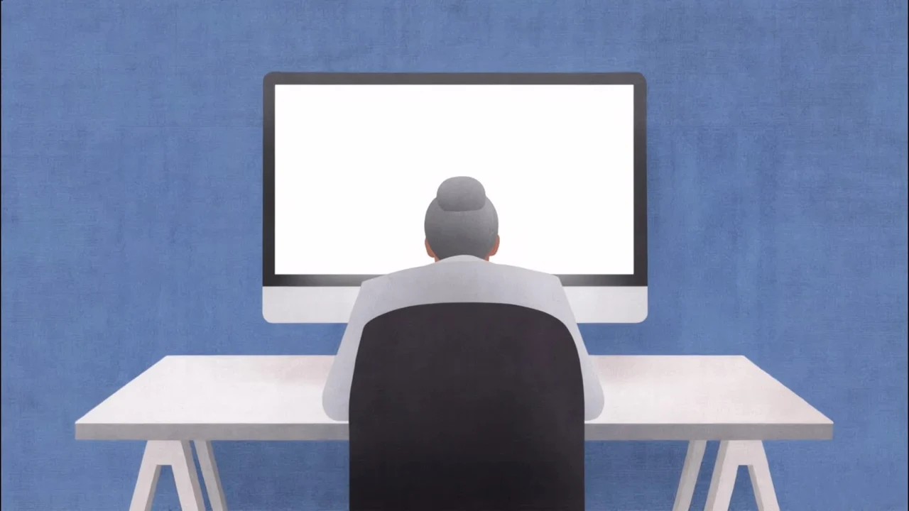

01 / EDITORIAL & NARRATIVE缥缈诗篇ETHEREAL POETRY
从牌面叙事，到可以使用的说明书。
内容撰写 / 排版设计 / 电子牌上线对接

《缥缈诗篇》
01 / 内容项目说明书撰写与排版设计，对接软件方推进电子牌上线。


 FLOW TAROT / 浮落
FLOW TAROT / 浮落从牌面叙事，到可以使用的说明书。
内容撰写 / 排版设计 / 电子牌上线对接
说明书撰写与排版设计，对接软件方推进电子牌上线。
流动的思维、颜色、能量与爱。
阅读项目 ↗
将抽象理解转化为 80 张几何牌面，独立推进绘画、排版、实体制品与电子牌内容呈现。
说明书参与 / 联动产品提案
故事文本撰写 / 联动更新

参与说明书内容工作，提出联动产品方案并撰写联动故事。
手绘草图 / 自制关键帧与 AI 图像
AI 生视频 / 剪辑成片

独立完成 3 支广告视频，覆盖创意、脚本、分镜与剪辑。
以上封面均取自真实项目素材，点击可进入独立项目页。
文案 · 叙事 · 视觉表达
关注文字如何建立叙事，也关注内容如何成为可以交付的作品。在米奥哈工作室的文案编辑实习中，参与塔罗项目的说明书撰写、排版与上线对接；在个人项目 FLOW 中，独立推进从主题构思、卡牌绘画到生产落地的全过程。
2027 届应届
文案撰写、叙事构建、脚本与分镜、内容排版、活动策划、跨方对接与落地执行。
可画、剪映、InDesign（熟练）；Photoshop、After Effects（基础）。
米奥哈工作室 · 文案编辑（2025.02—2025.08）
2024 CTS × ADTS 北京国际艺术设计玩具展览会 · 展会销售（2024.12.21—12.22）
校自律委员会企划活动部（2023.09—2024.06）：参与会议、活动策划及执行，统筹部门团建；参与图书馆、自习区使用规范方案设计，方案被校方采纳并投入运行。
天津传媒学院 · 影视摄影与制作 · 本科（2023.09—2027.06）